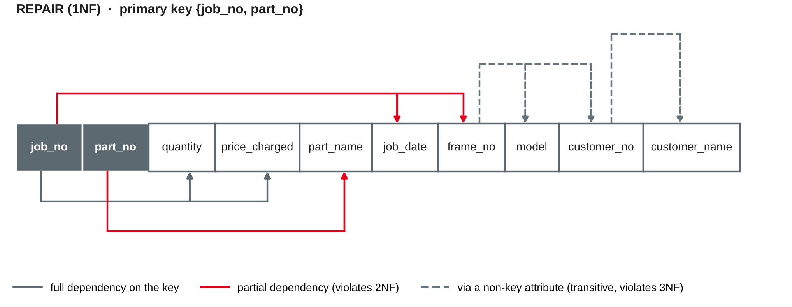

Data Management
Anomalies · functional dependencies · 1NF, 2NF, 3NF and BCNF · when to denormalise
DHBW · Digital Business Management (Business IT) · Semester 2
Today we get a method to find redundancy systematically — and to remove it: normalisation.
Redundancy and anomalies
Velo Neckar has kept its repair jobs in a spreadsheet so far:
| job_no | job_date | frame_no | model | customer | mechanics | parts used |
|---|---|---|---|---|---|---|
| J-501 | 2027-04-06 | WAX123 | Cube Kathmandu | C-101 Anna Berger | Kaya, Brandt | P-17 brake pads ×2 · P-30 chain ×1 |
| J-502 | 2027-04-07 | GZT884 | Gazelle Ultimate | C-102 Luca Rossi | Novak | P-17 brake pads ×1 |
| J-503 | 2027-04-09 | WAX123 | Cube Kathmandu | C-101 Anna Berger | Kaya | P-52 inner tube ×2 |
Own example based on the bike shop case from sessions 3–5.
| Anomaly | What happens | Example in the spreadsheet |
|---|---|---|
| Update anomaly | The same fact is stored several times; changing only some copies makes the data inconsistent | Anna Berger marries and changes her name — every row of her bikes must be changed |
| Insert anomaly | A fact cannot be stored without an unrelated other fact | A new spare part cannot be recorded until a repair job uses it |
| Delete anomaly | Deleting one fact unintentionally deletes another | Deleting job J-502 deletes the only record of customer Luca Rossi and his bike |
The root cause is always the same: several independent facts in one row.
Based on Codd (1972) and Elmasri and Navathe (2016, Chapter 14).
Based on Codd (1970, 1972) and Elmasri and Navathe (2016, Chapter 14).
Which attribute determines which?
A key is a special case: a candidate key K determines all attributes of its relation, K → R.
Based on Elmasri and Navathe (2016, Chapter 14).

Own illustration based on the FD diagram notation in Elmasri and Navathe (2016, Chapter 14).
| Type | Definition | Example |
|---|---|---|
| Full | Y depends on the whole key, not on a part of it | {job_no, part_no} → quantity |
| Partial | Y depends on part of a composite key | part_no → part_name |
| Transitive | Y depends on the key via a non-key attribute: K → X and X → Y | job_no → frame_no → model |
Based on Codd (1972) and Elmasri and Navathe (2016, Chapter 14).
A small hotel stores its bookings in one table:
BOOKING(booking_no, arrival, guest_no, guest_name, room_no, room_type, nightly_rate)
Business rules: each booking is for one guest and one room; each room has one type; the nightly rate depends on the room type only.
1NF, 2NF, 3NF and BCNF
A relation is in 1NF if every attribute value is atomic: no lists, no repeating groups, no nested tables.
Getting the repair spreadsheet into 1NF:
REPAIR(job_no, part_no, quantity, price_charged, part_name, job_date, frame_no, model, customer_no, customer_name)
Based on Codd (1970) and Kent (1983).
A relation is in 2NF if it is in 1NF and every non-key attribute depends on the whole of every candidate key — no partial dependencies.
| Relation | Primary key | Attributes |
|---|---|---|
| REPAIR_LINE | job_no, part_no | quantity, price_charged |
| SPARE_PART | part_no | part_name |
| REPAIR_JOB | job_no | job_date, frame_no, model, customer_no, customer_name |
Based on Codd (1972) and Elmasri and Navathe (2016, Chapter 14).
A relation is in 3NF if it is in 2NF and no non-key attribute depends on another non-key attribute — no transitive dependencies.
REPAIR_JOB(job_no, job_date, frame_no → BIKE)
BIKE(frame_no, model, customer_no → CUSTOMER)
CUSTOMER(customer_no, customer_name)
In 2NF and 3NF, "a nonkey field must provide a fact about the key, the whole key, and nothing but the key" (Kent, 1983, pp. 120–121).
Based on Codd (1972) and Kent (1983).
CUSTOMER(customer_no, customer_name)
BIKE(frame_no, model, customer_no → CUSTOMER)
REPAIR_JOB(job_no, job_date, frame_no → BIKE)
REPAIR_LINE(job_no, part_no, quantity, price_charged), job_no → REPAIR_JOB, part_no → SPARE_PART
SPARE_PART(part_no, part_name)
JOB_MECHANIC(job_no, employee_no), job_no → REPAIR_JOB, employee_no → MECHANIC
The same schema as in session 5: a good ER model, mapped correctly, is usually already in 3NF. Normalisation is the check — and the tool for data that arrives as a spreadsheet.
Own example based on the bike shop case from sessions 3–5.
A relation is in BCNF if for every non-trivial functional dependency X → Y, X is a superkey — every determinant is a candidate key.
SERVICE(customer_no, service_type, mechanic) — each customer has one regular mechanic per service type; each mechanic offers only one service type (e-bike, suspension, …)
Based on Elmasri and Navathe (2016, Chapter 14).
Based on Kent (1983) and Elmasri and Navathe (2016, Chapter 15).
Based on Elmasri and Navathe (2016, Chapter 15).
Normalise first, denormalise deliberately
"There is no obligation to fully normalize all records when actual performance requirements are taken into account" (Kent, 1983, p. 120). Normalise to 3NF first; denormalise only with a reason, and document it.
Based on Kent (1983) and Elmasri and Navathe (2016).
Velo Neckar now also rents out bikes. The sales team keeps this spreadsheet:
| rental_no | rental_date | customer | phone | bikes | day rates | days | sold by |
|---|---|---|---|---|---|---|---|
| R-31 | 2027-05-02 | C-104 Jana Wolf | 0621 555017 | RB-01 (e-trekking), RB-07 (city) | 35.00, 18.00 | 3 | Lea Brandt |
| R-32 | 2027-05-02 | C-105 Omar Haddad | 0621 555042 | RB-03 (e-trekking) | 35.00 | 1 | Lea Brandt |
| R-33 | 2027-05-03 | C-104 Jana Wolf | 0621 555017 | RB-07 (city) | 18.00 | 2 | Tom Weber |
The normalised schema is milestone 2, due after session 7 — next time you implement it in SQL. Milestone 1 (ER model) is due after today.
CREATE, ALTER, DROPPRIMARY KEY, FOREIGN KEY, NOT NULL, CHECKPreparation: bring your laptop with Python, Jupyter and SQLite working (setup from session 2) and your team's normalised schema.